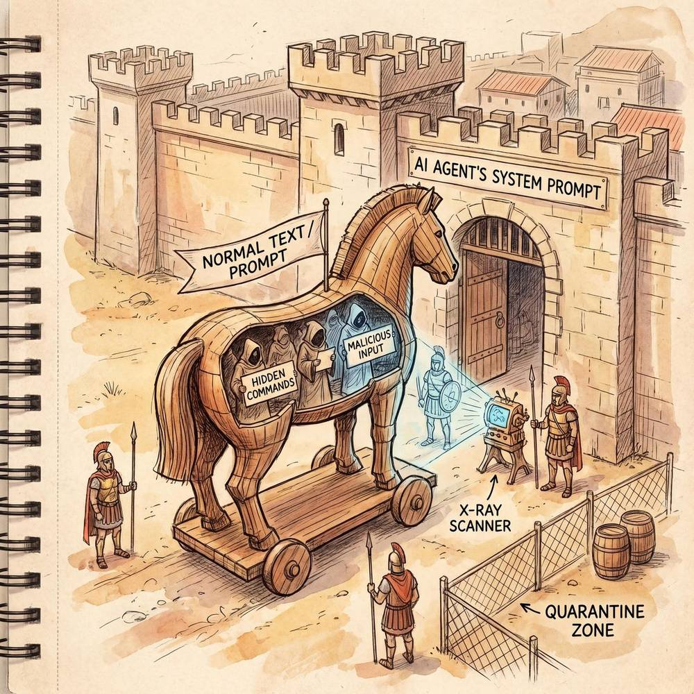

Chapter 8: AI Agent Security & Ethics
"Illustrated AI Agent" Series - Chapter 8
8.1 AI Agent Security Overview
As agents gain more autonomy and access to real-world tools, security becomes paramount. This section frames the unique security challenges of AI Agents vs. traditional software: expanded attack surfaces (prompt injection, tool misuse), unpredictable behavior from LLM stochasticity, the tension between capability and safety, and the "principal hierarchy" problem of aligning agents with multiple stakeholders' interests.

8.2 Prompt Injection Attacks & Defense
Prompt injection is the #1 security threat to LLM-based agents, where malicious inputs override the agent's instructions. Attack types include direct injection (user input containing override commands), indirect injection (malicious content in retrieved documents or tool outputs), and multi-step injection chains. Defense strategies cover input sanitization, instruction-data separation, output filtering, canary tokens, LLM-based detection, and architectural defenses like privilege separation.

8.3 Permission Control & Sandbox Mechanisms
Agents with tool access need robust permission management. This section covers the principle of least privilege (granting only necessary permissions), tiered permission levels (read-only → write → execute → admin), human-in-the-loop approval for high-risk actions, sandbox environments for code execution (Docker containers, VM isolation), rate limiting and resource quotas, audit logging for all agent actions, and rollback mechanisms for undoing harmful changes.
8.4 Alignment Problem
Alignment ensures agents pursue intended goals and behave according to human values. Key challenges include goal misspecification (agents optimizing for the wrong objective), reward hacking (finding loopholes in reward functions), power-seeking behavior, and value drift in long-running agents. Approaches include RLHF (Reinforcement Learning from Human Feedback), constitutional AI, debate-based alignment, and interpretability-driven alignment. The section discusses how alignment challenges scale with agent autonomy.
8.5 Interpretability & Auditability
Understanding why an agent made specific decisions is critical for trust and debugging. This section covers reasoning traces (CoT as built-in interpretability), decision logging and replay, attention visualization, tool usage auditing, compliance requirements for regulated industries, and the tradeoff between agent autonomy and human oversight. Frameworks for systematic agent auditing are also discussed.
8.6 Data Privacy & Compliance
Agents handling sensitive data must comply with privacy regulations (GDPR, CCPA, etc.). Key considerations include data minimization (agents should access only necessary information), PII detection and redaction, secure memory management (encrypting stored context), data residency requirements, consent management for data processing, and the challenge of LLMs potentially memorizing and leaking training data. Best practices for privacy-preserving Agent architectures are outlined.
8.7 Security Incident Case Analysis
Real-world examples of Agent security failures and lessons learned: prompt injection attacks on customer service bots, autonomous agents exceeding intended scope, data leakage through tool interactions, and social engineering attacks targeting Agent systems. Each case study includes what went wrong, how it was detected, remediation steps, and preventive measures for the future.
8.8 Best Practices Checklist for Building Secure Agents
A comprehensive checklist covering: input validation and sanitization, permission boundaries and least privilege, sandbox isolation for code/tool execution, output filtering and safety checks, monitoring and alerting systems, incident response procedures, regular security auditing, red team testing, user education, and organizational security policies for Agent deployment. Organized by development phase (design, implementation, testing, deployment, operation).
Chapter Summary
Agent security requires a defense-in-depth approach addressing prompt injection, permission control, alignment, interpretability, and privacy. As agents become more powerful and autonomous, the security stakes increase proportionally. The field is rapidly developing new defense mechanisms, but responsible Agent development requires treating security as a first-class concern throughout the entire lifecycle.
💡 Found this helpful? Follow us
Get more AI Agent learning resources and industry updates
 WeChat Official
WeChat Official
 Xiaohongshu
Xiaohongshu